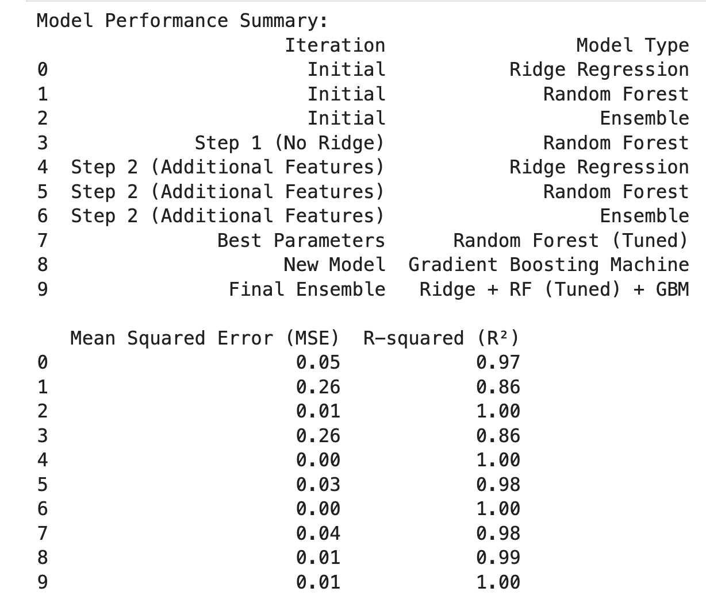

Sunday Red E.
Sunday Red E.
My ultimate goal is to predict the winner of the 2024 Open Championship that takes place July 18th and ends on July 21st.
I ran multiple iterations of models, ultimately 10 different iterations, on the list of players participating in this year's edition. These models included Ridge Regression, Random Forest, Ensemble, Gradient Boosting, and a whole lot of feature engineering.
The results of my models gave me an average R2 of 0.96, an average Mean Squared Error (MSE) of 0.07.
R2 indicates how well the model explains the variability of the data.
MSE measures the average of the squares of the errors or deviations from the predicted values.
As a result, my predicted winner of this year's Open Championship is.....
Ludvig Åberg!